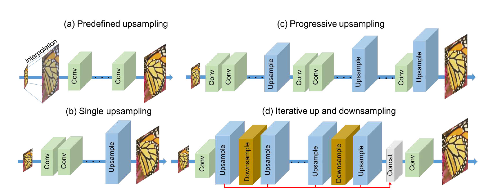

DBPN paper review
안녕하세요. 인공지능 공부/연구중인 김대한 이라고 합니다. 이번 포스트는 다음의 논문과 연관이 있습니다.
https://arxiv.org/pdf/1803.02735 (CVPR 2018)
0. Abstract
Feed-forward architecture는 저해상도와 고해상도 이미지의 상호의존 관계를 완전히 설명하지 못한다고 합니다. 여기서 말하는 저해상도 이미지와 고해상도 이미지의 상호의존관계는 feed-forward 구조의 경우 어쨋든 input은 LR image 이며 모든 layer들이 LR image에서 extraction된 정보만 이용하기 때문에, LR image <> HR image 사이의 의존관계를 부정적으로 바라보고 있는 것 같습니다. 즉, 어느순간에는 LR image으 정보로만 HR image를 만들어 내는 것은 부적절 하다. 까지 바라볼 수 있었습니다.
We propose Deep Back-Projection Networks (DBPN), that exploit iterative up- and downsampling layers, providing an error feedback mechanism for projection errors at each stage. We construct mutually connected up- and down-sampling stages each of which represents different types of image degradation and highresolution components.
눈길을 끄는 단어는 *feedback mechanism, *projection error, *image degradation, *high-resolution componets. 입니다.
저자의 말에 따르면, 제안하고자 하는 네트워크에는 반복적인 Up/Down sampling layer를 포함하고, Up/Down sampling layer 들은 projection error를 계산하고 이를 공유하여 성능을 보이겠다. 라고 하는것으로 보입니다. 이를 (feedback mechanism) 이라고 하는 것 같습니다.
network에서 반복되는 Up/Down sampling 을 각각 output_Up(Upsample), output_Down(Downsample)이라고 하면, output_UP를 HR중 하나로 보고, output_Down를 LR중 하나로 보고 있다고 생각이 됩니다.
핵심은, 이를 통해서 x8 (lager scale factor) 에서 성능을 보여줬다는 것입니다.
** 당시 Challenge (x8) track 에서 1위를 하였습니다. **
1. Introduction
저자는 계속적으로 이전방식들의 메커니즘을 설명하고 있습니다. 이는 “ non-linear LR-to-HR mapping “으로 간단히 말할 수 있을 것 입니다. [6,7,37,24,21,22,42] 에 해당하는 네트워크 구조들은 LR image 에서 feature extraction을 한 뒤, 1 or N개의 upsampling layer 를 통해 HR space 로 확장합니다. 이러한 방식을 Feed-Forward 방식 입니다. 저자는 human visual system은 feedback connection을 사용하는 것으로 파악하고 있다고 합니다. (이를 SR 네트워크에 적용하겠다.) 따라서, Feed-Back이 없기 때문에, 기존에 Feed-Forward connection만 존재하는 SR 구조들은 large scale 에서 LR –> HR 어려움을 겪는다고 합니다.
Error feedback : iterative error correcting geedback mechanism 을 SR에서 제안한다고 합니다. up/down projection(sampling)의 error를 통해 reconstruction 결과를 더 좋게 Guide 한다고 합니다. 여기서 중요한 것은 이러한 방법이 어떤 역할을 하는가? 일텐데, 저자는 projection error를 사용함으로써 early layers 를 characterize or constraint 한다고 합니다.
Mutually connected up- and down-sampling stages : LR image 의 representation 만 HR space 로 mapping 합니다. (oneway mapping) 당연히, 해당 방법의 경우 large scale factor에 대해서 강인하기 힘든 것이 사실입니다. input 즉, LR에서의 정보량은 제한되어 있기때문에 정보량 관점에서 large scale factor로 mapping하려면 디테일한 정보들을 살려야 할텐데, 필요한 정보량 대비 갖는 정보량이 매우 적다고 판단됩니다.
따라서, 해당 논문에서는 upsampling 을 사용하여, 가능한 HR feature를 다양하게 만드는 것에 초점을 맞추고, 더불어서, 만들어진 HR feature를 downsampling 을 통하여, 다시 LR space 로 projection 한다고 합니다.
SR은 일반적으로 1 : N 의 답이 나올 수 있는 Task입니다.(ill-posed problom), 1(LR) : N(HR) OR 1(HR) : N(LR), 두 경우 모두 포함된다고 생각합니다. 논문에서는 두 가지 경우를 모두 고려하는 것으로 보여집니다. 여러개의 HR image 로 여러개의 LR image를 만들고 결과적으로 초록에 쓰여있던것 처럼 각각 다른 HR 구성요소와, image degration을 표현이 가능하게 하는 것으로 보여집니다. 다음의 그림들은 기존 제안된 방식과, 본 논문에서 제안하는 방식입니다.
Deep concatenation : 직관적으로 보이는 network의 이점은 다양한 type의 image degradation 과 HR componete 를 나타내는 것입니다. 이때, 논문에서는 모든 output(Upsampling) 을 concat하여 HR image로 복원한다고 합니다. Figure2(d)의 빨간선을 보시면 됩니다.
Improvement with dense connection : 해당 논문의 아이디어에 dense connection을 추가하여 성능을 향상시켰다고 합니다.
2. Relatedwork

[ (a) Predefined upsampling (eg.SRCNN, VDSR, DRRN) ]
해당하는 구조는 LR image를 interation을 통해, HR space로 변환 후 복원하는 방식입니다. 앞단에서 interpolation을 사용하여 middel resolution(MR)을 생성한다고 합니다. SRCNN의 방식과 같습니다. 논문에서도 말하고 있지만, 이러한 방식은 MR image 에 새로운 노이즈를 발생시킬 수 있는 단점이 있습니다.
[ (b) Single upsampling (eg.FSRCNN, ESPCN, EDSR) ]
이러한 방식은 spatial resolution 을 높이고 (a)에서 앞단에서 사용한 interpolation과 같은 predefined operators 를 대체 가능합니다. 논문에서는 이러한 방법에서 Network capacity 가 제한되어 있어 복잡한 mapping은 학습에 실패한다고 합니다. EDSR network 가 NTIRE2017에서 우승하였지만, 매우 많은 파라미터가 요구됩니다.
[ (c) Progressive upsampling (eg.LapSRN) ]
이러한 방식은 LapSRN 에서 처음 제안되었습니다. network에서 서로 다른 scale로 upsampling합니다. 그러나, 단순하게 해당 네트워크는 limited LR features에 의존하는 single upsampling stack이라고 볼 수 있다고 합니다. 결과적으로 LapSRN은 lager scale factor x8 에서 shallow network로 좋은 성능을 보입니다.
[ (d) Iterative up and downsampling (proposed) ]
논문에서 제안하는 SR network 입니다. 저자는 different depth(different layer)와 distribute 에서 SR feature의 sampling rate를 증가시키는 것에 초점을 맞춘다고 합닝다. (각 stage 마다 reconstruction error를 계산) 해당 schema는 네트워크가 보다 deep feature를 생성할 수있게 하면서 upsampling 을 학습하여 HR component를 보존한다고 합니다.
[ Back-projection ]
[18] 의 Back-projection은 reconstruction error 를 minimize 하는 efficient iterative procedure로 알려져 있습니다. 여러 연구들에서 back projection이 유의미하다는 것을 입증하였슨비다. originally back-porjection은 Multi LR input 이 있는 경우 적합하게 designe 되었다고 합니다. single LR input이라면, updating procedure은 multiple upsampling operator를 사용하고 reconstruction error 를 반복적으로 계산함으로써 가능하다고 합니다. 이와 비슷하게 SR Task 에 적용한 연구들이 있었습니다. 이전 연구들을 확장하여 해당 논문은 SR에서 architecture를 제안하였습니다.
3. Deep Back-Projection Networks
논문에서 제안하는 Projection unit의 구성을 살펴 보겠습니다.
[ Up-Projection Uint ]
sacle up : (previously computed LR feature map) L^t-1 * spatial convolution operator
scale down : scale up * spatial convolution operator
residual : scale down - (previously computed LR feature map) L^t-1
scale residual up : H1^t = residual * spatial convolution operator
output feature map = Hx + Hx+1 ……
이를 도식화 하면 아래와 같습니다.
Up - Projection Unit 은 L^t-1 = x[low-resolution] , H0^t = y[High-resoltion] 이라고 생각하시면 됩니다. 최종 output은 HR 중 하나입니다.
[ Down-Projection Uint ]
이를 도식화 하면 아래와 같습니다.
UP-Projection Uint 과 유사하게 생각하시면 됩니다. 순서가 바뀐 것 뿐입니다.
결과적으로, Projection Unit은 projection error를 sampling layer에 전달합니다. projection error를 feed-back 합니다. 반복적으로 self-correcting 한다고 볼 수 있습니다.
Projection Uint 은 large size filter(8,12)를 사용합니다. 기존의 network들은 large size filter를 사용하지 않습니다. 왜냐면, network의 convergence speed 가 감소하며, sub-optimal result를 생성할 수있기 때문입니다. 논문에서는 반복적으로 Projection Uint 을 사용하여 이러한 문제점을 해결하고, large scale factor(x8)에 대해 shallow network로 좋은 성능을 낸다고 합니다.
[ Dense-Projection Uint ]
Densenet을 이용하여 Dense Projection Uint 또한 제안합니다.
D-DBPN 과 DBPN의 차이점은 DBPN은 최종 output을 도출하기 위하여 concat을 하는데, Dense Projection Uint 은 최종 output 뿐만 아니라, 중간중간 MHR image 에도 모두 concat 된 HR/LR image 가 input으로 들어가게 됩니다. 계산량이 많아지는 것을 1x1 conv 로 억제하였습니다.
[ Network architecure ]
중간에 back-projection unit의 갯수는 조절이 가능함으로 저자는 논문의 network architecture가 module 형이라고 합니다.
t stage가 있는 DBPN : inital extraction stage( 2 layer ) -> t up-projection unit t-1 down-projection unit (each 3 layer) -> reconstruction layer(one more layer)
D-DBPN : conv(1x1)이 추가됩니다.
4. Experiment
논문에는 더 많은 실험결과 및 옵션이 정의 되어있습니다. 필요하면 논문을 보셔야 할 것 같습니다.
우선, 흥미로운건 H^t를 각각 visualize 한 실험결과 입니다. 다음의 그림이 해당됩니다.
저자는 다음과 같이 말하고 있습니다.
In Fig. 10, it is shown that each stage successfully generates diverse features to reconstruct SR image.
아래는 철저히 개인적인 생각이며 의견입니다.
해당 실험결과가 조금 더 신빙성이 있으려면, single upsampling 결과를 보여줬어야 한다고 생각합니다.
single upsampling network 에서 Depth에 따른 feature 정보와 어떻게 다른지 궁금하다는 의문을 남겨놓습니다.
그렇다면, Deep network single upsampling 에서 보다 shallow network 에서 back-projection이 낳는 이점을 정량적으로 충분히 더 보여줄 수 있지 않았나 라는 생각을 해봅니다.
SR paper 가 모두 그런것은 아니지만, cherry picking 하여 image를 삽입하는 것이라고 개인적으로 생각합니다. 그러나 x8 의 경우 다른 기존의 network와 확연한 차이를 보여주기 때문에 저자가 large scale factor에서 좋은 성능을 보여줬다는것에 싱빙성을 입증하였습니다.
[DBPN] : https://github.com/thstkdgus35/EDSR-PyTorch “Includes implementation of DBPN”